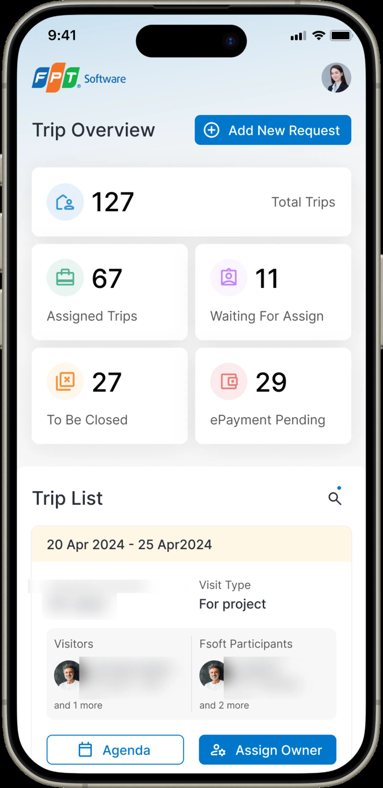

Overview
The problem
An audit of the visit-management tool found 36 usability defects (counted), and the only critical-severity one sat on the screen managers used most — the request form itself.
What the proposal promised
Three weeks in, with feedback arriving from three stakeholder groups and no single approver, I cut four of those five roles and two of five modules out of Phase 1 and spent the room on mobile. Phase 1 shipped, and two further phases followed — the tool now runs inside the company super app as a webview. The main task was modelled at 6.2 → 3.6 minutes (estimated).
Nobody expected the tool to help
A senior customer flies in for two days. Before they land, someone books the meetings, drafts an agenda, assigns who from which delivery unit attends, sets a budget and records what the visitor cares about. Get it wrong and the company looks careless in front of the account it most wants to keep.
All of that lived in one internal tool, and the team that ran it had stopped expecting the tool to help. That is the state I was asked to change — and the reason the audit had to come before anyone drew a screen.

People had built habits around not trusting it
Five days of audit, then interviews with three managers who run visits daily, plus the tool owner and the business owner. The complaint I expected was "it's ugly". What came back was sharper, and it is the finding the rest of this project hangs off.
What discovery found

The filters returned wrong results
They queried an old database. Three filters were the only ones anyone used, and the other eleven were noise people had learned to route around.
The volume was rising under it
1,376 requests in 2023, 2,096 forecast for 2024 (client data) — a growing load on a tool with a defective form at the centre of it.
Five roles, one record
Requester, customer relations, manager, delivery unit, administrator all touch a visit. The manager carries the coordination load and uses the screen that fails hardest.
The four questions, answered in writing
- Who are the users, and what problem do they have? Five roles touch a visit record — the requester, the customer relations team, their manager, the delivery unit and an administrator. The manager carries the coordination load, and the form they use most is the one that fails hardest.
- Why now? Rising request volume — 1,376 to a forecast 2,096 in a year — against a tool whose central form carried the audit's only critical defect.
- What would tell us it worked? Time on the main task, against a 6.2-minute baseline. The target set at the outset was a 34% reduction; the modelled design came out at 42%.
- Is it feasible? Yes — and we proved it by sequencing the design foundation in week one, so screens could be assembled rather than drawn from scratch.
Which is a clear enough picture to design against. It is not a picture that fits in three and a half months.
The decision: four roles, cut
By week three the signed proposal was a plan for a document, not a release. Feedback was arriving from three stakeholder groups at once with nobody empowered to settle a disagreement, and the scope was quietly growing while the release dates stayed where they were. I wrote it up as an amber status that week rather than a green one, and then had to say what I would do about it.
Options
Hold the contract. All five roles, all five modules, as promised. Honours the proposal, but each role gets a handful of days and none of them ends up usable.
Keep the roles, thin the modules. Wide and shallow. Every role gets something and no role can complete a visit.
One role, properly. Narrow to the manager — the role that touches the tool most and owns the critical screen — and go deep enough to ship, desktop and mobile.
Criteria
Which role touches the tool most often? Which module contains the one critical defect? And the constraint that decided it: what can development start building in April, rather than review in June?
What I chose
C. I rewrote the work breakdown down to a single role — manager, desktop and mobile — and pulled the timeline in from three and a half months to two and a half. Shorter, not longer: a narrower scope with a real handoff date was easier to defend to the client than a broad one that kept slipping.
What I killed
Two modules — dashboard and account management — which stayed at "to do" when Phase 1 closed, and never came back. Four roles pushed to a later phase. And of the 26 change requests the client raised after the design review, I marked 11 out of scope (counted), eight of them on the agenda feature alone: calendar view, auto-updating meeting invites, assignee availability checks, visitor photos, live progress. Each was a reasonable request. Together they were another project.
The trade I made with that room was specific. Agenda — a feature the original plan did not include at all — was added mid-project because the interviews said it was where the format errors came from. Dashboard and account paid for it.
Three surfaces carried the narrowed scope
The overview answers "what needs me today" before anyone filters. The request form gives thirty loose fields somewhere to belong. And mobile, which did not exist at all, does the four things people do between meetings. One sequencing call made all three possible: the design foundation came first — colour and type fixed on day one, running alongside the audit, then buttons, form controls, validation and the search-and-filter pattern inside two weeks. Only then did anyone draw a screen.
Overview
Fourteen filter controls above a dense table, several of them returning wrong results, and status carried by flooding whole rows red and green. Five counts now answer the "what needs me" question before any filtering happens, three filters replace fourteen, and status moves from row fill to a label — which gives the colour back its meaning.
What changed

Request form
The screen that carried the audit's only critical finding. The flat thirty-field page became a tabbed record — overview, agenda, customer log, travel, history — with the request split into named groups, and the two actions a manager actually performs, set status and assign an owner, promoted into the header instead of buried at the foot. The fix for "hard to check afterwards" was not fewer fields; it was giving the fields somewhere to belong.
Before and after

Mobile, from nothing
There was no mobile experience at all, and the interviews were specific about what it needed to do: assign an owner, read the agenda, send meeting details, note what a visitor cares about. Not the desktop tool shrunk — the four things people do between meetings. This is also what made the super-app integration possible two phases later; a five-role desktop redesign would have been the wrong artifact to embed in a mobile shell.
What I did not do
Two of the nine needs users raised were left unmet by design: saving a draft when the session expires, and quick notes on a visitor's preferences. Both needed back-end work outside the design scope. They belong in the honest count, not the resolved one.

Design went to development in pieces, not as a package: overview on 8 April, the request form on the 9th, agenda on the 11th. Three releases in four days, each one something the client's dev team could start on while the next was still being drawn. That cadence is what made the narrowed scope worth anything — the point of cutting four roles was to get one role into a build, not to finish earlier. In the final fortnight the design team worked directly alongside engineering filling in screens the spec had missed, which is the honest version of "design complete": complete enough to build, and then amended while it was being built.
It shipped, and I never got the number
Phase 1 released. Phase 2 and 3 carried on with the features that had been cut for being nice rather than necessary, and the tool now sits inside the company super app as a webview — which is the real vindication of the narrowing call. What I cannot give you is a post-release number: every time figure on this page is a pre-launch model, and I want to be exact about that rather than let a percentage do work it hasn't earned.
The modelling itself is worth reporting honestly too. Four revisions of the estimate exist and they do not agree — baselines of 5.75, 2.46 and 6.2 minutes appear across them. I would present the last: 6.2 → 3.6 minutes, a 42% reduction (estimated), because it is the only revision whose arithmetic is internally consistent and it is the most recent. The "34%" in the summary paragraph was never updated when the model changed, and I would not quote it.
What I would defend without qualification is the defect and needs accounting: all 36 audit findings addressed in the design (counted), and six of nine user needs met, with the three that were not named rather than dropped from the count (counted).